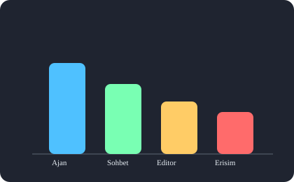

VS Code 1.110 — Ogren, Uygula, Test Et
Bu mini kurs; ajan kontrolleri, akilli oturumlar, tarayici araclari, Kitty terminali ve JS/TS ayarlarini gercek gelistirici bakisiyla, Turkce olarak adim adim ogretir.
Bu mini kurs; ajan kontrolleri, akilli oturumlar, tarayici araclari, Kitty terminali ve JS/TS ayarlarini gercek gelistirici bakisiyla, Turkce olarak adim adim ogretir.
%0 tamamlandi
v1.110 One Cikanlari
js/ts.* altinda birlesti.
Modul 1
Arka plan ajanlari, Claude ajan yenilikleri, Debug Paneli, Auto Approve ve ajan eklentileri.
Modul 1'e GitModul 2
Session memory, context compaction, fork, model picker ve ozel dusunce cumlecikleri.
Modul 2'ye GitModul 3
Modal editor, NES uzak oneriler, Kitty graphics, JS/TS birlestirme ve Python ortamlari.
Modul 3'e Git